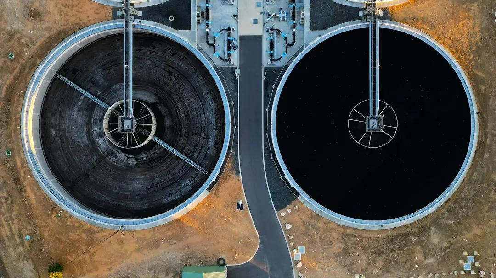

Reticulation for a Perth lawn or garden should be planned around the water supply, soil and planting layout. The published guidance from Landscapers Perth describes systems using a controller and separate zones for lawns and garden beds, with either scheme or bore water. Pipes are best installed before turf, paving and mulch. Before comparing quotes, record the property area, access, existing trees, slope, water source and the areas that need separate watering.
For homeowners comparing reticulation installation perth options, the practical questions are which water supply is available, how the garden should be zoned and when pipes need to be installed.
Reticulation Installation Perth Explained
Landscapers Perth describes reticulation as a system for lawns and garden beds, planned in zones with a controller and set up for scheme or bore water. That makes the first site question practical: identify which supply is available before discussing pipe runs, outlets or controller settings.
Perth blocks commonly contain fast-draining sand that holds little water or nutrient. A watering layout therefore needs to be considered alongside soil preparation, turf selection and planting design. If beds and lawn receive different watering, ask for those areas to be shown separately rather than treated as one undifferentiated space.
During the initial inspection, note the rough area, existing trees, shade, slope, access for equipment and whether the property uses a bore or scheme supply. These details help a contractor explain how the design fits the block and make later quotes easier to compare.
Separate lawns, beds and other watering needs
A controller and separate zones give the design a clear structure. Lawns and garden beds can have different watering requirements, so the quote should identify which areas sit on each zone and where the outlets or spray points are intended to go.
Ask how the layout will accommodate areas with different sun and shade conditions. The wider landscaping guidance notes that new turf should be chosen for its sun, shade and watering conditions, while garden beds may need soil conditioner or organic matter before planting. Reticulation should be considered with those decisions, not added after the surface is finished.
- Request a simple plan showing lawn, garden-bed and any other distinct watering areas.
- Confirm the proposed controller location and how each zone will be identified.
- Ask whether rain sensors or other controls are part of the design or an optional item.
- Check which preparation work is included before turf, mulch or planting is completed.
This approach gives the homeowner something specific to review, instead of comparing quotes only by the number of sprinkler heads or the total price.
Install pipes before the finished surfaces
The published Perth landscaping guidance says reticulation pipes are best laid before turf, paving and mulch go down. That sequence affects planning for a new lawn, garden makeover, path or entertaining area. If hard surfaces are already being designed, ask the landscaper to coordinate pipe routes with the paving base and finished levels.
Access also belongs in the early discussion. A narrow side passage, existing trees, sloping ground or a block with limited machinery access may change how the work is staged. These are not reasons to assume a particular result, but they are useful quote inputs because they describe the actual work area.
For a larger makeover, place the watering layout beside the other work items in the written scope. Confirm whether the quote includes trenching, pipework, controller setup, testing and reinstatement, or whether some of those items are separate. A clear list helps distinguish a complete installation from a partial allowance.
Compare the quote and check related work
Reticulation rarely sits alone on a landscaped block. Soil improvement, turf, planting, paving, mulch and retaining may all affect where pipes can run and when they can be installed. Retaining walls on sloping or boundary sites can also bring council permit or engineering questions, so the watering plan should be discussed before the final levels are fixed.
Use the published cost guide for Perth landscaping costs and quote comparisons when you want to examine how access, soil preparation, levels, materials and hardscape can change the overall job. The useful comparison is not simply the cheapest total. It is whether each quote includes the same preparation, zones, controls and reinstatement.
Ask for current certificates where the project involves multiple trades, such as bore work, and confirm which professional handles each part. The guidance also recommends checking licences and insurance for the particular job and confirming that public liability cover is in place.
Who this guide applies to
This guide is for Perth homeowners planning a new lawn, garden beds, a broader garden makeover or watering changes during paving and other landscape work. It is also relevant when an existing block has sandy ground, different sun conditions or a choice between bore and scheme supply.
It is less useful as a standalone answer where the property needs a detailed irrigation audit, a specialist bore assessment or engineering advice for a retaining structure. In those cases, write down the unanswered technical questions and ask the relevant trade to address them in the quote.
Before requesting prices, prepare the suburb, rough area, access notes, photos or plans, water source and a short description of the areas to be watered. That information reflects the enquiry details published by Landscapers Perth and gives the contractor a clearer starting point.
- Describe the job. Record whether the work involves a new lawn, garden beds, a makeover or changes alongside paving or mulch.
- Check the block. Note slope, access, shade, existing trees, rough size and whether water comes from a bore or scheme supply.
- Mark the zones. Ask for lawn and garden-bed areas to be shown separately with the controller location identified.
- Compare written scopes. Check that quotes address preparation, pipework, controls, testing and any reinstatement on the same basis.
- Resolve related approvals. Ask about council, engineering, licence and insurance questions where retaining, boundaries or multiple trades are involved.
| Choice to confirm | What to ask | Why it changes the plan |
|---|---|---|
| Scheme water | Is the system intended for scheme supply, and are controls or zones specified? | The available supply informs the design and controller setup. |
| Bore water | Is the property using a bore, and which trade handles related work? | Bore work may involve a separate professional and should be identified in the scope. |
| Lawn and beds | Which areas receive separate zones? | The published guidance distinguishes lawn watering from garden-bed watering. |
| Timing of installation | Will pipes be laid before turf, paving and mulch? | Early installation avoids treating finished surfaces as an afterthought. |
Common questions
Should reticulation be installed before turf and paving? Yes. The published guidance says reticulation pipes are best laid before turf, paving and mulch go down. Coordinate the pipe routes with finished levels and the paving base.
Should lawns and garden beds share one watering zone? The guidance describes separate zones for lawns and garden beds. Ask for the proposed zones to be shown clearly so the layout reflects the different areas of the garden.
Does Perth sand affect the watering plan? It can affect how beds and turf are prepared because sandy ground drains fast and can repel water once dry. Ask what soil conditioner or organic matter is included before planting.
What should be included in a reticulation quote? Ask whether the written scope includes pipework, zones, controller setup, testing and reinstatement, and whether preparation or related bore work is separate.
What information should I provide when requesting a quote? Provide the suburb, job type, rough size, access details and any photos or plans. Also state the water source and which parts of the garden need watering.
This guide covers planning, zoning, timing and quote questions for residential garden reticulation work across Perth.